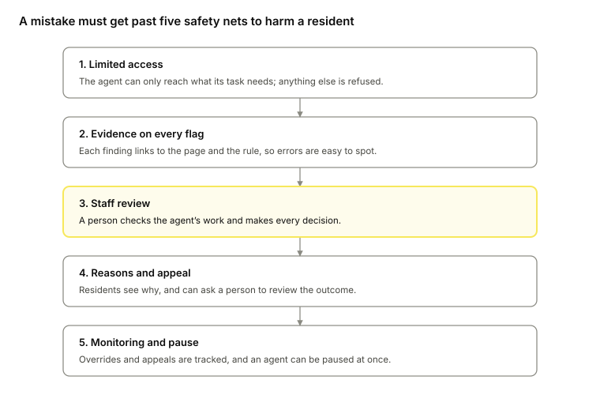

Featured · · 3 min read
What happens when an agent gets it wrong?
AI agents will sometimes get things wrong, just as people do. A trustworthy service is one designed so that mistakes are caught early, fixed quickly, and never quietly harm a resident.
Few technology companies talk about this openly. We think government buyers deserve a straight answer, so here is ours: how we expect agents to fail, the safety nets we build around them, and what happens if a mistake gets through.
Read the post: What happens when an agent gets it wrong?